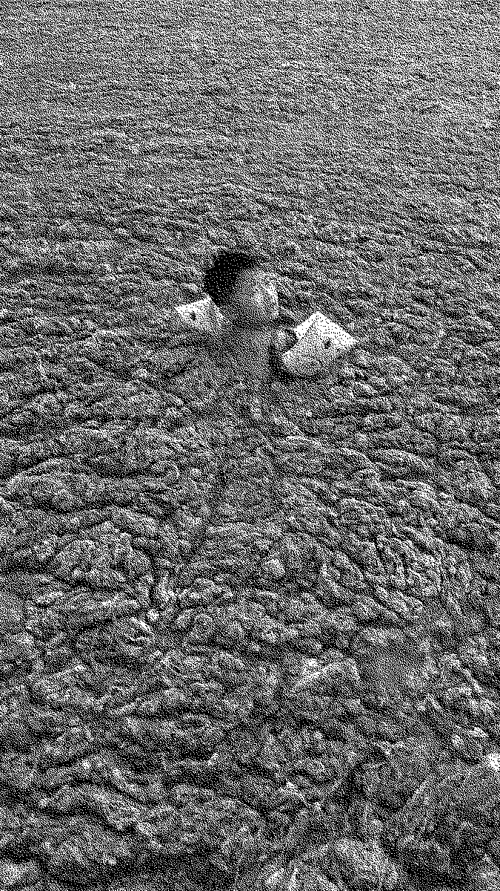
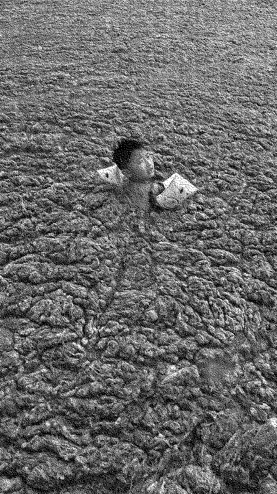

Intestines: Food and Magic
The body of all mammals is not simply brains and bones – a hollow vessel. Most of the functions in the body happen thanks to more than 100,000,000,000 germs and microbes, living organisms contained within us since birth. By looking into the process of fermentation a certain sensibility between forces becomes apparent, which is not only culinary, but goes to the very basis of our physical existence. It transcends life and death. Fermentation is simply life without oxygen, which leads us back to the primordial soup theory, which claims that we all came to be through this same process that is used for a majority of our food production. Most famed of these foods are kefir, yoghurt, kombucha, sauerkraut and kimchi. Fermentation is one of the major pathways that microbes undertake to provide themselves nutrition. Dialogue is therefore present between beings in a metabolic sequence of consumption. Eating a crunchy leaf of fermented cabbage, holds a much larger discourse than just ‘me eating some sauerkraut’. A jar of fermented vegetables embodies ideas of immortality, transformation and multi-species coexistence.
"The living body is always on the point of passing over into the chemical process: oxygen, hydrogen, salt, are always about to appear, but are always again sublated; and only at death or in disease is the chemical process able to prevail. The living creature is always exposed to danger, always bears within itself an other …" —G. W. Hegel
We tend to think of bacteria as dirt. From antibacterial soap to pasteurizing foodstuffs, we are aiming for complete eradication of microbes in our regime. Since the 19th century, hygiene has been thought about strictly in terms of purification. But even this discourse is somewhat riddled with arbitrary exceptions where some species such as dogs and cats are permitted into the enclave of culture or ‘the human’ while others such as mice and bacteria are not. The main source of bacterial imagery comes to us through antibacterial product advertising, quite a narrow perspective. The active fermentation taking place during digestion shows the benefits of a "foreign" species working harmoniously with us. Thus, by looking within the anthropic body, we can get away from the construct dictating that foreign = unwelcome. Nationalist desires against immigration play out a scene where newcomers seeking political and social stability are viewed as germs, vermin. Fermentation serves as the egalitarian example of inclusivity. Sean Raspet, who works with flavor as an artistic medium speaks about the human mode of production as a primarily chemical one , the interactions of substances. Yet we are intrinsically disgusted by chemicals, which make up for a lot of processes in our lives.
“Only 10% of the human body is human. The other 90% are microbes.” — Dr. Kwang Sik Kim
Fermentation is not only a process of the outside world. We are born sterile and through vaginal birth we receive germs and microbes from our mother and from other sources throughout our whole lives. Our bodily functions are driven by some of the same microbes formed during food fermentation. The human body is not just brains and limbs – a vessel. When oxygen ceases to be circulated within the body, these microbes play a role in self-digestion after death. We carry this process within us, it’s not an alien. Fermentation happens. It is the route of minimal resistance. In raw metabolic terms, life is shit. At death, our decaying bodies are transformed into food for worms. Boundaries between living and non-living are broken down in the same way as our flesh is consumed by other-than-human life. Yeast and bacteria are omnipresent in each breath we take, each bite of food, they line our insides processing and transforming ingested matter into nutrients. Antibacterial soaps and antibiotics will not massacre them either, try as you might, it could only backfire. Our lives depend on these microscopic organisms. Learning about our being as a sympoiesis of many forces and nourishing this act is a step towards queering our relationships with entities on different scales.
We know things, we discover them, through their acts, and if we wish to discover the powers of objects we have to act on these objects to see what they do in these conditions. It is through provoking objects to discover what properties flash forth that we discover their powers ... to find out what objects are capable of doing." —L. Bryant, Object-Oriented Empiricism
The Swiss alchemist Paracelsus suggested that 'ferment' was spiritual by reinterpreting the links between the divine and bread in terms of his Protestant chemistry. When ferment was combined with inanimate substance — massa in Latin, also the word for bread dough, it multiplied. In breadmaking a ferment is typically used to raise bread loafs. This ferment contains active bacteria which integrates with the dough mixture and fills it with spirit. Due to the qualities that bread reveals when being baked with active bacteria, it is able to transcend into a realm beyond the physical. Seeing foodstuffs as beings, can bring about a renewed sense of what and how we produce and consume. Paracelsus questions the life-bringing qualities of non-anthropic beings. Claiming that there is nothing in the physical realm which is not also spiritually imbued.
The Eucharist ritual during the Catholic Mass reveals qualities of animated food, where bread and wine are consumed as the flesh and blood of Christ. In Christian theology, fermentation, close to the soul itself, turns lifeless objects into vibrant, living beings filled with spirit. While not related to metaphysics, in 1551 "this holy Council (of Trent) now declares again, that by the consecration of the bread and wine there takes place a change of the whole substance of the bread into the substance of the body of Christ our Lord and of the whole substance of the wine into the substance of his blood." This aspect of Catholic rituals is known as transubstantiation, where two fermented foodstuffs not only represent, but becomes a physical piece of the higher being that is worshipped and communicated with.
Multidisciplinary artist Jenna Sutela channels other-than-human forms of communication where computers interpret the actions of bacterial forms of life. In her piece nimiia cétiï, she intertwines "Martian" language generated by a French medium Hélène Smith and the extremophilic (attraction to the harsh conditions) bacterium Bacillus subtilis, which is present in the intestines of mammals, and used in making nattō, a traditional Japanese fermented soybean food. The computer, in this work, is a medium, channeling messages from entities that we typically cannot communicate with.
The term fermentation does not only apply to the chemical transformation of things, it is also defined as "agitation and excitement". In the bucket of sauerkraut, just as in the Soviet Kitchen, an exchange and mutation of forces and ideas comes about. Fermentation in its varying states is "an agent for change" within a culture. In "Wild Fermentation", queer food writer Sandor Ellix Katz pushes for acknowledgment of microbes as legitimate sources of inspiration through their transformative nature . In a socio-political context foodstuff has played an active role in emancipatory movements, it vitalizes the physical and mental state. Vinegar, a product of fermentation played a vital role in the 2013 protests in Brazil. With the goal of decreasing public transportation prices and escalating towards other issues within the government. When the police turned on the protestors through the violent use of tear gas, which the civilians tried protecting themselves from with vinegar, which was then banned from being carried at the protest with bearers of the fermented liquid being arrested. The idea was that breathing through a cloth soaked in vinegar would neutralize the effects of tear gas though this doesn’t really seem to work. The police then claimed that the product can potentially be used to make bombs, but this is even less true. Although the practical use of vinegar failed the test, it did bring together salad dressing lovers during turbulent political times. The entire protest movement was named, the V for Vinegar movement. As a symbol for the rising of angry Brazilians, vinegar also went through a process of fermentation, frustration, in order to reach its present state. Somehow the people and their ‘protector’ have something in common. A metabolic process links these two beings, creatures of change.
 
